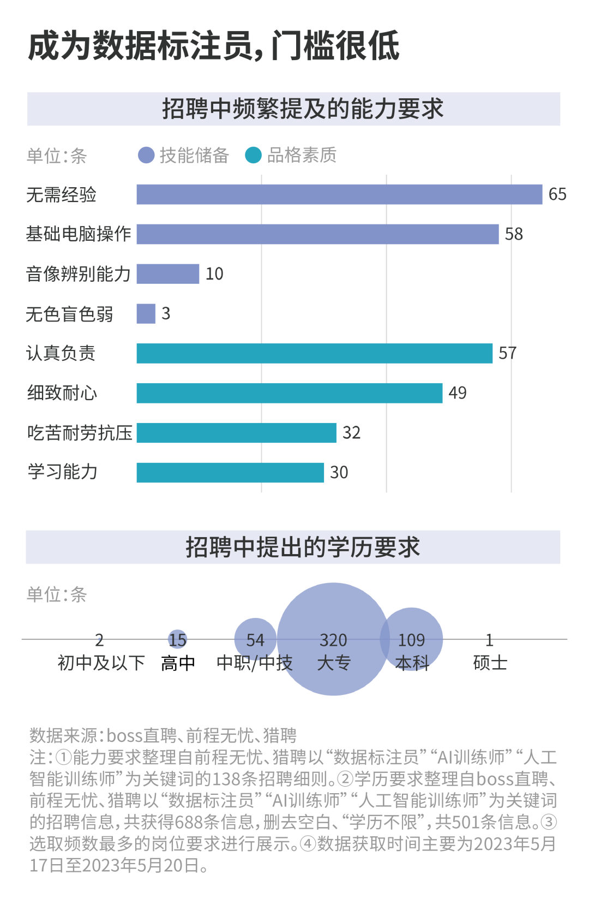
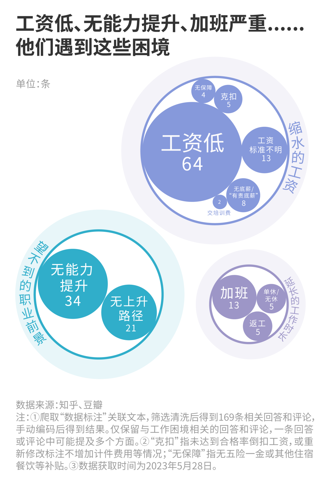
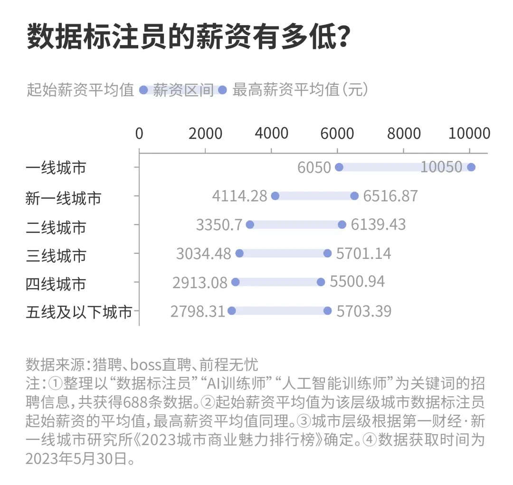
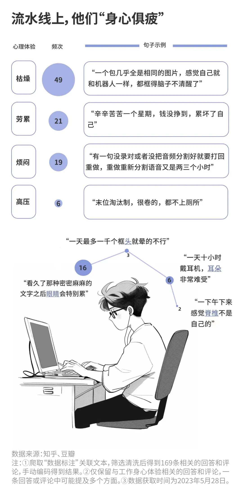
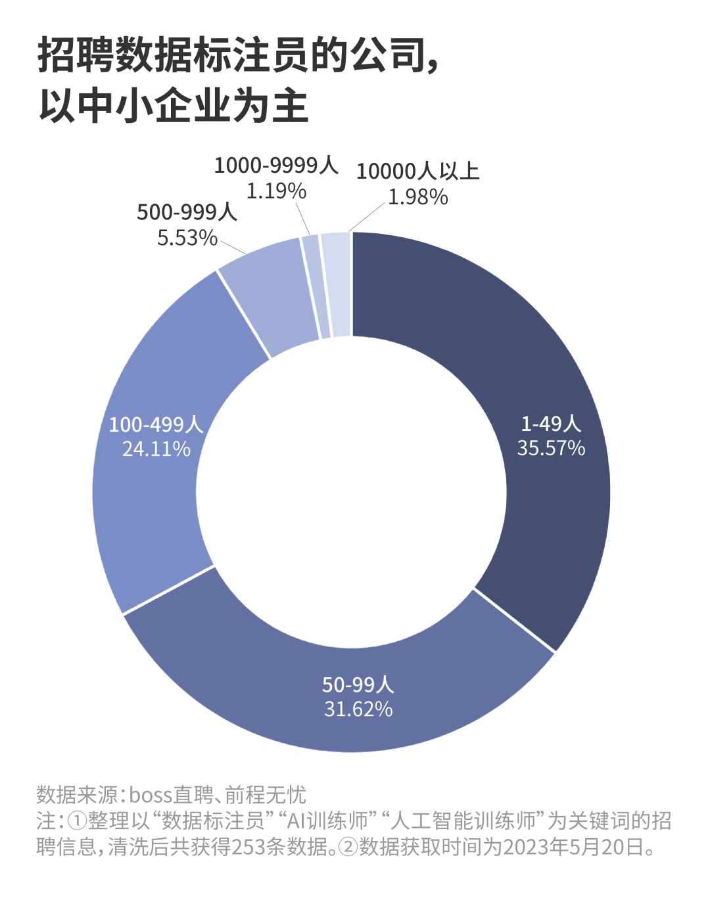

*The project was developed in collaboration with Shiyu Chen, Yifan Li, Ruijia Zhao, and Mengmeng Wu from Fudan University School of Journalism. Illustrations in cover and infographics were generated using Midjourney.
Abstract
The article focused on the overlooked effort behind AI's rapid development, highlighting the role of AI annotators, also known as "ghost workers” in the industry.
AI annotators are people spending long hours performing repetitive, high-focus tasks like labeling images and transcribing audio. The role is vital for training machine learning models, but the workers themselves experience low pay, little job security, and health issues.
Potential reasons that make workers feel less secure include skimming from various outsourcing layers, as well as the possibility of being replaced by automation.
Infographics
According to hiring posts, most AI annotation roles did not require prior experience, but emphasized traits such as responsibility and patience, indicating a low barrier to entry.

AI annotators frequently reported low pay, limited career advancement, and excessive overtime on social media platforms.

Salaries are low, averaging under ¥6,000 per month even in top-tier cities, with wider gaps in lower-tier cities.

Workers reported high stress levels and health issues, with common complaints including exhaustion, eye strain, and the physical toll of repetitive tasks.

Employers of AI annotators were primarily small- and medium-sized enterprises. Workers noted that high platform deductions were a key reason for persistently low wages.
